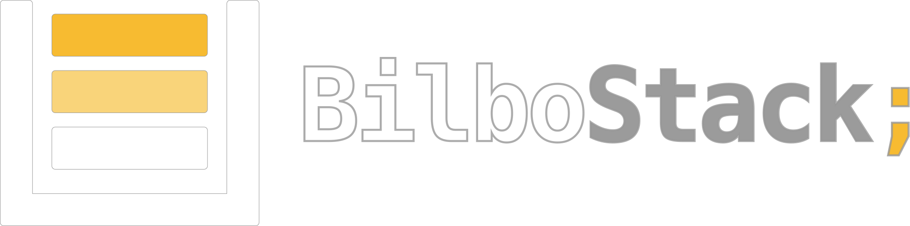

26 de Enero del 2019
8ª Edición de la cita tecnológica anual más esperada en Bilbao
Entradas a la venta aquíNo olvides leer nuestro código de conducta
No olvides leer nuestro código de conducta
Llevo desarrollando aplicaciones ricas desde hace más de 15 años, sin dejar además pasar la oportunidad de impartir formaciones y charlas alrededor de JavaScript y de su ecosistema.
Mi principal objetivo es dar a conocer el lenguaje y sus herramientas desde una perspectiva ágil, centrada en la calidad del código y en poder aplicar de forma sencilla técnicas consideradas más avanzadas como testing y/o refactoring.
Actualmente imparto en empresas una curso llamado Agile JavaScript. Por otra parte, enseño refactoring en Agile@Work, genero contenidos en Programmer@Work y GenBeta Dev y organizo decharlas.com.
En el mundo del desarrollo JavaScript, encontrar un flow estable y medianamente fácil de asimilar por nuestro equipo puede suponer todo un reto.
Un posible factor de éxito puede radicar en nuestra capacidad para alinear este entorno con nuestros valores de crafter pata negra: Testing, pair programming, continuous delivery, design patterns...
En 'Agile JavaScript' intentaremos hacer explícitos estos valores con el fin de que sean ellos los que nos ayuden a elegir el conjunto de prácticas y tecnologías que nos conviene adoptar. Una manera distinta de viajar por el estado actual y futuro del ecosistema JavaScript y no caer en la 'JavaScript fatigue'.